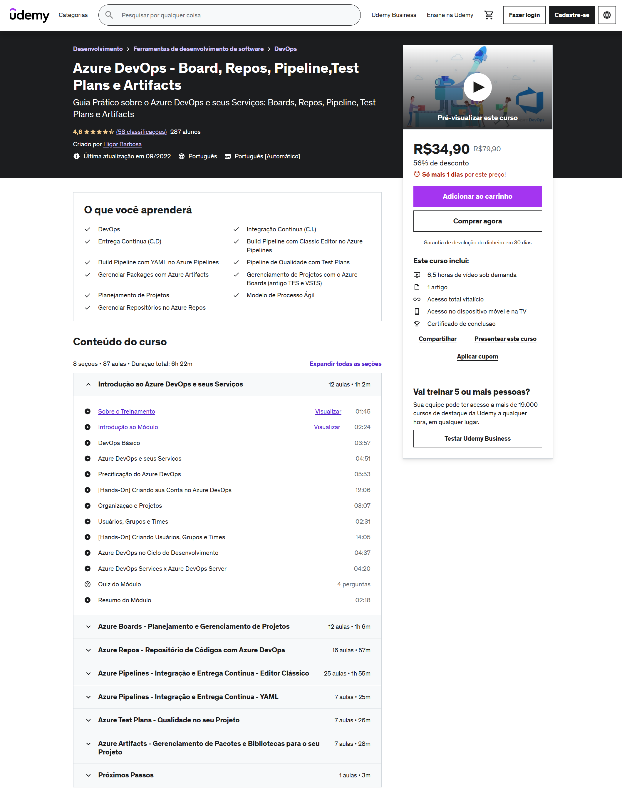

Azure DevOps - Board, Repos, Pipeline,Test Plans e Artifacts
Azure DevOps - Board, Repos, Pipeline,Test Plans e Artifacts
Guia Prático sobre o Azure DevOps e seus Serviços: Boards, Repos, Pipeline, Test Plans e Artifacts.
